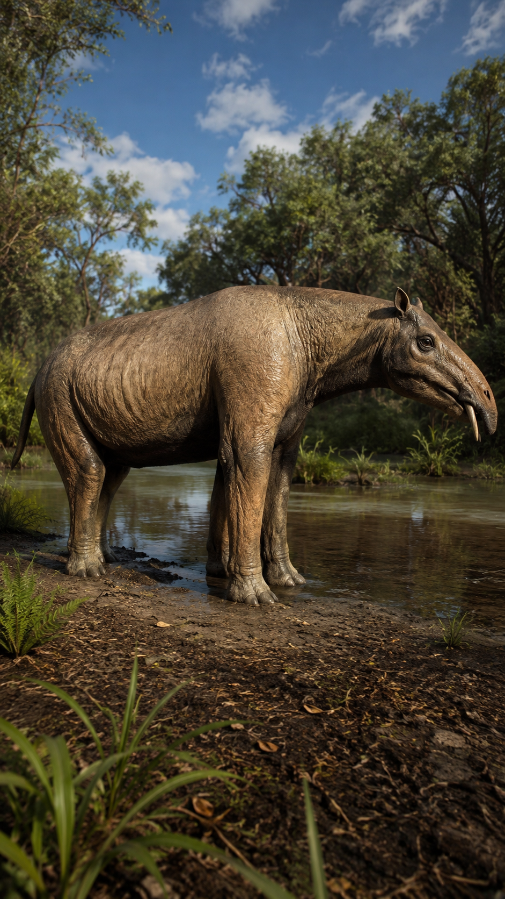
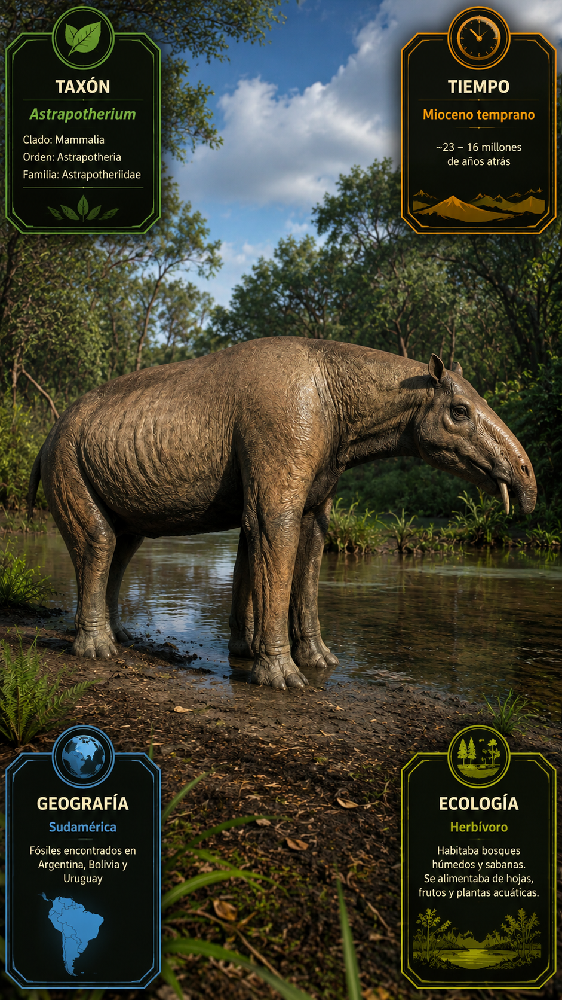
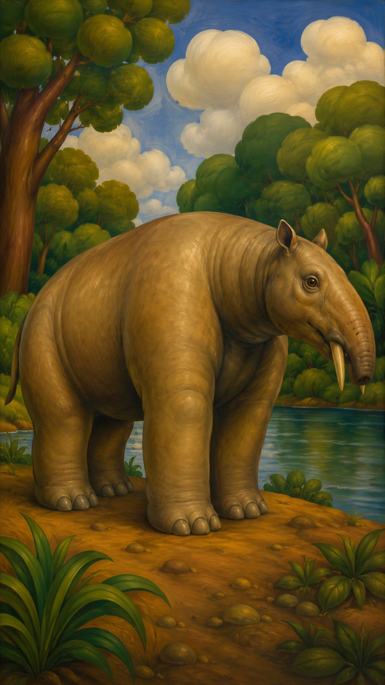

Paleoficha de PalEntropía



TAXÓN:
Astrapotherium magnum
CLADO:
Astrapotheria (Meridiungulata, Panperissodactyla)
DIETA:
Herbívoro (ramoneador de vegetación blanda, hojas y brotes en estratos arbustivos y forestales)
TAMAÑO:
Longitud estimada de hasta 3 metros y masa corporal aproximada de 1 tonelada.
LOCOMOCIÓN:
Terrestre graviportal; extremidades robustas y columna vertebral adaptadas para soportar una elevada masa corporal mediante locomoción cuadrúpeda de baja velocidad.
TIEMPO:
Mioceno Inferior–Medio (aprox. 19–15 Ma)
GEOGRAFÍA:
Sudamérica (Argentina, formaciones de la Patagonia)
EQUIVALENCIA PALEOGEOGRÁFICA:
Bosques templados abiertos, llanuras aluviales y entornos riparios del Cenozoico sudamericano.
AMBIENTE PALEAOECOLÓGICO:
Ecosistemas forestales mixtos y sabanas arboladas con disponibilidad estacional de recursos hídricos.
ECOLOGÍA:
• Flora: Bosques mesofíticos, angiospermas leñosas y abundante vegetación de sotobosque.
• Fauna secundaria: Comunidad de mamíferos nativos sudamericanos, incluyendo litopternos (Theosodon), notoungulados y forusrácidos.
• Nichos: Gran ramoneador con adaptaciones craneales especializadas. El retroceso de las aberturas nasales indica la presencia de un labio superior musculoso o una pequeña probóscide para seleccionar hojas y brotes, mientras que los colmillos superiores probablemente intervenían en la defensa y la competencia intraespecífica.
• Relaciones: Meridiungulado endémico de Sudamérica. Su evolución aislada produjo un gran herbívoro convergente con tapires y proboscídeos, aunque pertenecía a un linaje completamente distinto de mamíferos placentarios.
CLIMA:
Wm29 (Mioceno cálido-templado). Clima templado a cálido, con precipitaciones moderadas y elevada productividad vegetal en los ecosistemas patagónicos.
ESTADO ECOLÓGICO:
Estable. Uno de los mayores herbívoros de la Patagonia miocena, desempeñando un papel fundamental como gran ramoneador dentro de los ecosistemas forestales y de llanura de Sudamérica.